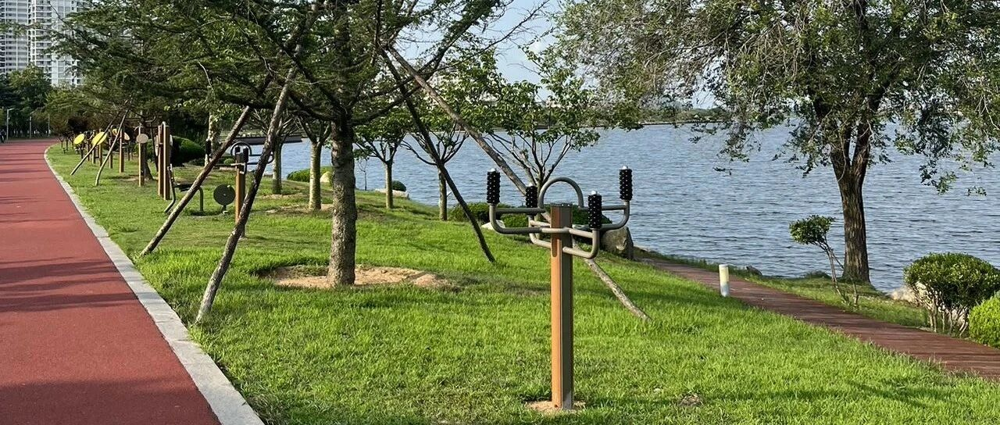

北京搬到威海100天的感悟！！！
点击关注 秋秋在分享
一起实现财务自由退休
大家好，我是秋秋呀。
来威海旅居已经三个多月了，人生真是:
换种生活，才能换一个视角。
从北京到威海，地图上不过八百公里，
我们骑行10天到达，生活上却仿佛跨越了一个维度。

毫不夸张，从北京搬到威海后，我家每个月光房租就能省下6500块！
用原来一半的钱，能活出双倍精彩。
接下来几年我都要继续旅居！
换个活法，真的香！
1.花的少了
在北京那会儿，每次交房租都肉疼——8000多块，占我们家庭总开支快50%。
不是我们花的多，而是三环内靠近地铁的两居，就是很贵。
我们在北京每月生活花销1万多，加上房租两万起步。
来威海后，租了个海景房才1500块！

一个月光房租就省下6500，这都够我们:
• 每天都吃一顿大餐
• 每月都去三亚玩
• 每年都能存下8万块钱
最爽的是，居住条件还好很多！
本来我和大老王就都不打算上班，留北京意义不大。
现在来旅居，花的少了人还舒服了，想想都觉得值。
2.体验好了
来威海后，总是体验"包场"的快乐！
海滩是随时可以去，大多数时候就我们一家。

图书馆永远清清爽爽，靠窗的座位都空着。
想去公园，家门口就是。
最让我惊喜的还是物价！
在北京玩个游乐园要100块起步，家长陪玩还要加钱。
在威海办张会员卡，充值618块钱就能玩一年，全场通玩单次才25块！

早教也便宜差不多50一次，我倒不期待孩子能学到啥，不过肯定要办卡的～
因为体验感太好了！
小区楼下也会有免费的游乐园，小孩子也能接触到更多大自然。
育儿体验这块，小宝宝是比北京要好。

游泳健身差不多一次10块钱，这价格在北京想都不敢想。
当然，你真想健身，湖边都是免费的设施：

大老王也有地方跑步了，每天都很开心。
3.人简单了
也有缺点。
演唱会话剧很少，大商场少，你真想消费机会也不多。医疗资源只能说够用，看大病还得去一线。
但是！这种缺点反而对于过平淡的生活很合适。
我的日常是：
• 和大老王一起晨跑
•带孩子赶海捡个贝壳
• 一起看看城市夜景
• 静下心来好好读书
 没有那么多消费机会和娱乐生活，反而收获了更宝贵的东西：
没有那么多消费机会和娱乐生活，反而收获了更宝贵的东西：
和家人相处的时间，与自己独处的机会，还有与大自然重新连接的时光。
更像陶渊明笔下的诗意生活。


哪个城市都不是完美无缺的。
小城市医疗教育肯定比不上一线，娱乐消费机会也不多。
但这些"缺点"也让人因祸得福——少花钱，少比较，少焦虑。
这100天的旅居生活也让我明白：幸福感和城市大小真的没关系！
如果你在大城市里卷累了，不妨给自己一个机会，可以换另一种生活方式。
没有什么不可能。
我们拖家带口，没房没车也都做到了。
人生是旷野，不是轨道。
没有什么事是人生必须得到必须做到的。
有机会换个活法，真的香！
从前我也不知道住在海边的生活是什么样的，有了这大半年的体验，也算了解了。
未来几年我还要去不同城市旅居～
云南新疆广州海南山西蒙古东北江浙沪……也欢迎大家给我们推荐。
FIRE路上我会一直写下去，期待下次见。